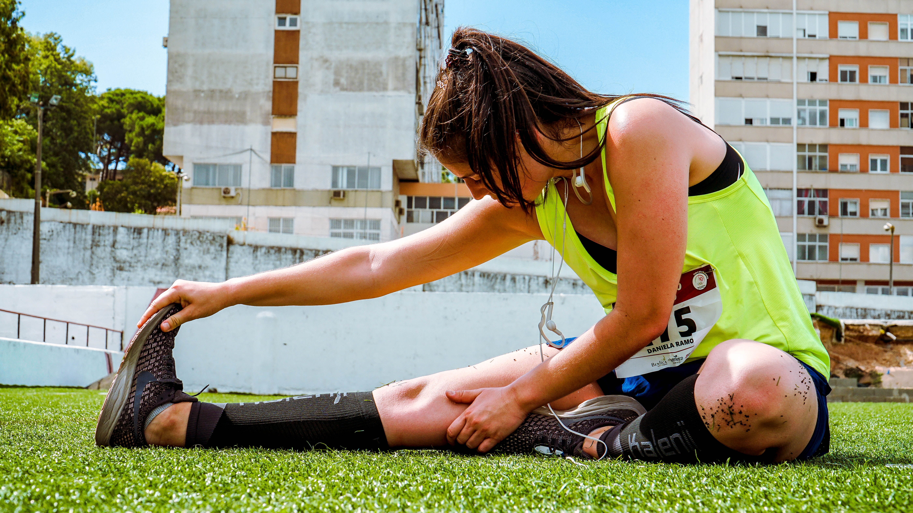
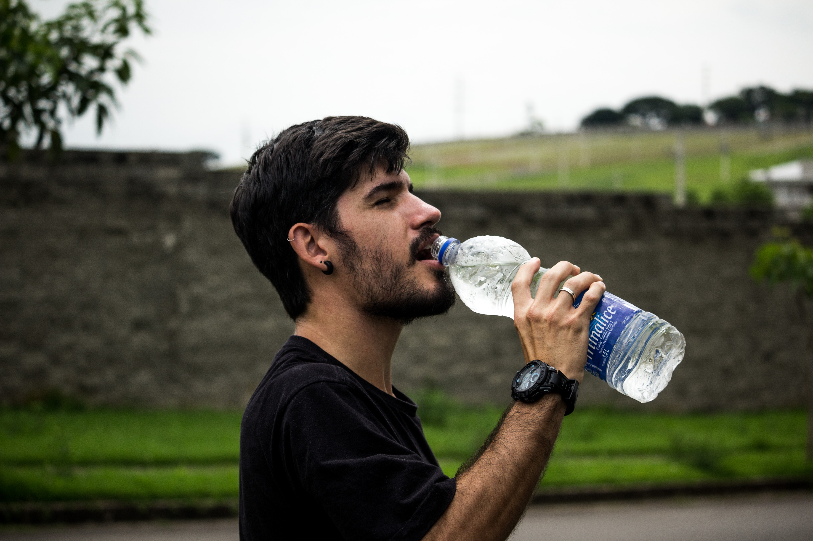

Restitution: Derfor er det vigtigt!
Du har sikkert hørt, at det er vigtigt at huske at restituere efter du har lavet en eller anden form for fysisk udfoldelse – men har du nogensinde tænkt over, hvad det egentlig vil sige at restituere efter træning?
Det kan du læse mere om i denne artikel.

Restitution kan egentlig inddeles i tre forskellige dele; øjeblikkelig restitution, kortfristet restitution og trænings-restitution.
Øjeblikkelig restitution er den restitution der sker i det øjeblik musklen slapper af. Det kan eksempelvis være under løb, hvor benene skiftevis er i brug. Her vil der være et kort øjeblik hvor det ene ben restituerer.
Kortfristet restitution er den restitution du oplever mellem to træningsøvelser. Det kan eksempelvis være den restitution du oplever mellem to sæt bænkpres.
Træningsrestitution er den restitution du oplever mellem to træningspas.
Det vil sige at forskellen på de tre restitutionsdele er længden af restitutionen – og dermed hvor meget du kan nå at restituere inden næste fysiske aktivitet.
Går du for hurtigt i gang med træningen igen, altså inden at din krop er restitueret, kan du risikere at gøre mere skade end gavn. Man kan nemlig riscikere at få skader hvis man træner for hyppigt, med for kort mellemrum. Forsøg har vist, at en optimal restitutionsperiode efter hård styrketræning ligger på mellem 48 og 72 timer.

For at få den optimale restitution, har vi her 4 punkter du med fordel kan bruge efter din træning:
1#: Udstrækning: Det er en god idé at strække ud. Flere studier viser, at udstrækning har en positiv effekt på ømme muskler. Min erfaring er, at man ved at strække ud, bliver mindre øm og mere smidig. Da stive muskler er mere udsatte for eksempelvis fiberskader, er det godt at strække ud.
2#: Drik vand: Spar på energidrikkene og indtag i stedet rigeligt med vand. Det er vand kroppen har brug for efter træning til at få genoprettet væskebalancen. Vandet er derudover med til at få renset kroppen for affaldsstoffer.
3#: Spis proteiner og kulhydrater: Spis så vidt mulig et måltid indenfor de første 30 min. efter din træning. Når kroppen har trænet, er den nemlig ekstra modtagelig for at fylde energidepoterne op igen. Du opnår altså en bedre optagelse af den kost du spiser, hvis det foregår inden for senest 1 time efter, at træningen er afsluttet. Kosten bør være rig på proteiner til genopbygning af muskler og energidepoter.
4# Hvile: Sørg for at få hvilet kroppen, så den er klar til næste træningspas. Herunder er god søvn en vigtig del.